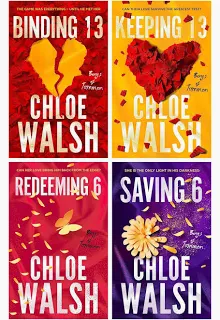

En romantisk och känslosam bokserie av Chloe Walsh som utspelar sig i Irland. Serien följer flera ungdomar som försöker hantera kärlek, vänskap, familjeproblem och psykisk ohälsa. Böckerna är kända för starka relationer, mycket drama och realistiska karaktärer. Den första boken fokuserar mycket på Johnny och Shannon, två personer med svåra livssituationer som hittar stöd hos varandra.
Buy Book